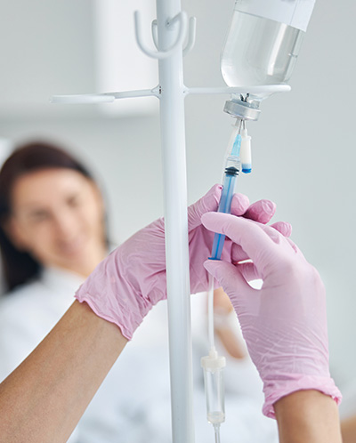
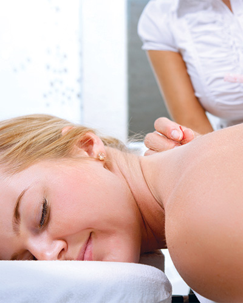

Creando un mundo de sonrisas y bienestar
En COI Salud cuidamos de ti de forma integral. Ofrecemos servicios de odontología general y especializada, medicina del dolor, medicina alternativa y sueroterapia, todo bajo el mismo techo, con el mismo nivel de calidad y trato humano.
Más de 30 años de experiencia nos respaldan. Nuestra trayectoria y conocimiento nos permiten brindarte confianza, seguridad y resultados duraderos en cada tratamiento.
Conocé más

Calle 3 No. 2-18, Barrio Centro
Te recibimos en el Centro de Especialistas de Buenaventura, en la Calle 3 No. 2-18 del Barrio Centro. Un espacio cómodo, con tecnología avanzada y un equipo enfocado en tu bienestar real.
Cómo llegar+30 años de experiencia
Trayectoria comprobada en odontología, medicina del dolor y terapias integrativas. Conocimiento que respalda cada tratamiento.
Atención cálida y humana
Te acompañamos con procesos claros, seguros y enfocados en tu satisfacción real, no solo en el procedimiento.
Tecnología avanzada
Usamos tecnología de punta para ofrecerte diagnósticos precisos y tratamientos más efectivos en cada especialidad.